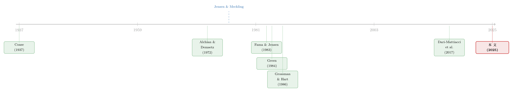

债务这副药，为什么不能全吃？——重读 Jensen 和 Meckling 五十年
本文读的是 Bolton (2025, Journal of Financial Economics)：作者用一个干净的三期模型，把 Jensen 和 Meckling (1976) 那两条「外部融资的代理成本」——外部股权带来的经理人偷懒、债务带来的风险转移——重新推了一遍，再往下追问一个他们没答完的问题：公司为什么要采用有限责任？答案藏在「永久资本的锁定」里。债务既是激励的良药，又是风险转移的毒药，这副药为什么不能整瓶吞下，正是整篇文章的脊梁。
1 一个被问了五十年的问题
先做一个思想实验。把时钟拨回到 1976 年，再往前数五十年，到 1926 年。你能想起几篇那个年代、到了 1976 年还被当作「必读」的论文？作者自己掰着指头数了半天：Ramsey (1928)、Hotelling (1929, 1931)、Coase (1937)——差不多就这些了。何况那个年代的人还习惯写书，而不是写论文。
于是反过来看 Jensen 和 Meckling 1976 年发在本刊上的那篇 Theory of the Firm，就显得格外不寻常：五十年过去，它非但没有过时，反而至今仍被当作公司金融的「前沿材料」，常常只在高阶课程里才教。这是极少数经得起半个世纪检验的文章之一。Bolton 这篇纪念文做了三件事：把那两条著名的代理成本用今天的语言重讲一遍；比原作更深地挖一挖有限责任与不完全合约下的控制权；再评一评这些思想五十年来被如何继承、如何被「误读」。
但如果只允许我用一句话概括全文的张力，那一定是这一句：
如果债务能给创业者最强的激励，那为什么公司不干脆全部用债务来融资？
这个问题，正是 Jensen 和 Meckling 全部洞见的转轴。先把它问清楚，后面的一切——风险转移、有限责任、永久资本、公司治理——都是顺着这根藤往下摸出来的瓜。
（顺带一提，关于 Jensen 其人其学，本博客此前写过两篇：《送别迈克尔·詹森：一个相信市场、却毕生研究市场失灵的人》 与 《用引用数丈量一生：詹森留给金融学的几堂课》，可对照着读。）
2 起点：Alchian 和 Demsetz 留下的半句话
故事不能从 Jensen 和 Meckling 讲起，得从 Alchian 和 Demsetz (1972) 讲起。
他们把激励问题引进了企业理论 (theory of the firm)。在他们眼里，企业是一个为了解决「团队生产」激励问题而设计的组织：一群工人要合作生产，需要有个经理去盯着，确保每个人都干自己那份活。可问题是——谁来盯着经理？既然没有人监督监督者，那经理自己的激励就只能来自一份「财务上的利益」。如果经理同时是唯一的股东，她的利益就是公司的利润，她把团队盯好，利润就最大化。
讲到这里，Alchian 和 Demsetz 却把笔停下了。他们没有问：钱从哪儿来？
这正是 Jensen 和 Meckling 接手的地方。他们把镜头转向经理与「资金提供者」——债权人和股东——之间的关系，问了一个全新的问题：债与股的比例，如何影响经理的激励？资本结构 (capital structure) 的选择，就这样被重新定义了一遍。
要知道，在他们之前，公司金融对「债股比例」的全部理解，几乎只剩一个权衡 (tradeoff)：债务的税盾收益（利息可以抵税），对上高负债带来的预期破产成本。可这套税收权衡理论 (tax tradeoff theory) 的预测，跟企业实际的资本结构选择对不上。显然，缺了点什么。缺的是什么？Jensen 和 Meckling 说，是「激励」。
3 第一条代理成本：外部股权与「偷懒」
Bolton 把这条洞见压缩成一个最干净的三期模型。让我们一步步把它走完——因为魔鬼正藏在这几行代数里。
设一家创业公司，三个时点 \(t=0,1,2\)。\(t=0\) 时公司要 \(F>0\) 的启动资金，且必须全部从外部市场筹集。\(t=1\) 时创业者决定要不要「偷懒」：努力 \(e\in\{0,1\}\)，偷懒（\(e=0\)）私人成本为零 \(\kappa(0)=0\)，加倍努力（\(e=1\)）则要付出私人成本 \(\kappa(1)=\kappa>0\)。\(t=2\) 时现金流实现，只有两种可能 \(C\in\{C^L,C^H\}\)：高现金流盈利 \(C^H>F\)，低现金流亏损 \(C^L
努力影响的是拿到高现金流的概率：
$$\Pr[C=C^H]\equiv p+e\cdot\Delta_p$$
这里 \(0 $$\Delta_p\,\Delta_C>\kappa$$ 现在轮到合约登场。创业者向竞争性资本市场发行对现金流的索取权：对 \(C^L\) 的索取权记作 \(R^L\)，对 \(C^H\) 的记作 \(R^H\)。有限责任 (limited liability) 要求 \(0\le R_i\le C_i\)。把贴现率设为零，投资者要至少回本，合约就要满足（记 \(\Delta_R=R^H-R^L\)）： $$F=R^L+(p+\Delta_p)\,\Delta_R \tag{1}$$ 接着，一个自然的问题是：在所有满足 (1) 的合约里，哪一种最能激励创业者去拼？ 把创业者在高努力与低努力下的期望收益写出来。高努力 \(e=1\)： $$(1-p-\Delta_p)(C^L-R^L)+(p+\Delta_p)(C^H-R^H)-\kappa \tag{3}$$ 低努力 \(e=0\)： $$(1-p)(C^L-R^L)+p(C^H-R^H) \tag{4}$$ (3) 减 (4)，所有跟合约结构无关的项都消掉了，只剩下一个干净利落的不等式——这就是委托—代理文献里所谓的激励相容约束 (incentive-compatibility constraint)： $$\Delta_p(\Delta_C-\Delta_R)\ge\kappa \tag{5}$$ 这条不等式，是理解整个故事的钥匙。让我们把它逐项拆开看： 读懂了 (5)，结论几乎是自动浮现的：创业者的激励，随着 \(\Delta_R\) 的减小而增强。因为 \(\Delta_R\) 越小，她在好坏两种结局里留给自己的现金流之差 \(\Delta_C-\Delta_R\) 就越大——她对结果越「在乎」。而在所有满足 (1) 的合约里，\(\Delta_R\) 在 \(R^L=C^L\) 时取到最小。这正是一份债务合约 (debt contract)： $$R^L=C^L,\quad R^H=C^L+\Delta_R,\quad \Delta_R=\frac{F-C^L}{p+\Delta_p} \tag{2}$$ 说它是债务，是因为当现金流落到 \(C=C^L\) 时，投资者拿走了全部现金流——债权对股权有优先权，公司违约时，债权人把现金流统统拿走。这就是 Jensen 和 Meckling (1976) 的第一条核心观察：相比外部股权（\(R_i=\alpha C_i\)，按比例分成，创业者在坏结局里没有被充分惩罚、在好结局里也没被充分奖励），债务给创业者最强的「皮肤在游戏里」(skin in the game)。当 \(\Delta_p\Delta_C>\kappa\) 时，只要债务是安全的（\(\Delta_R=0\)），(5) 永远成立——创业者拿走全部剩余索取权，自然全力以赴。 这条思想影响之大，怎么强调都不过分。它告诉我们：高杠杆的价值，不只来自更高的税盾；另一个常被忽略的源泉，是管理层激励更强、经营表现更好。 可如果债务这么好，问题就回到了第 1 节那个转轴上：为什么不全用债务？ 这就引出了 Jensen 和 Meckling (1976) 的第二条洞见，也是整篇文章真正的反转所在。Bolton 把同一个模型改动一处：\(t=1\) 时创业者的选择不再是「努力还是偷懒」，而是「冒多大的经营风险」。 把现金流扩成三档： $$C^L=0,\quad C^M=C,\quad C^H=2C,\quad C>0$$ 两个项目的概率分布是： 其中 \(\Delta_1>0,\Delta_2>0\)。直觉上，B 把更多概率质量压到了分布的两端——它更「极端」。若 \(\Delta_1=\Delta_2\)，B 就是 A 的均值保持展形 (mean-preserving spread)（Rothschild and Stiglitz, 1970），纯粹更险。Bolton 进一步假设 \(0<\Delta_1<\Delta_2\)，于是 A 的期望价值 $$p_1\,2C+(1-p_1-p_2)C$$ 严格高于 B 的期望价值 $$(p_1+\Delta_1)2C+(1-p_1-\Delta_1-p_2-\Delta_2)C,$$ 两者之差是 \((\Delta_2-\Delta_1)C>0\)。换句话说，A 在期望意义上是更好的项目。 那么问题来了：用债务融资，创业者会选哪个？ 设债务承诺偿付 \(K\)，且 \(C 但真正关键的一步在于：创业者只在 \(C^H\) 实现时才拿到正收益，那时她得到 \(2C-K\)。于是她在两个项目下的期望回报是 $$(p_1+\Delta_1)(2C-K)\quad\text{vs.}\quad p_1(2C-K).$$ B 那一边更高！于是她选择了价值更低的 B——因为 B 把风险不成比例地甩给了债权人。这就是风险转移 (risk shifting)：创业者宁可挑一个总价值更低的项目，只因为它能更多地把下行风险转嫁给债主。 而风险转移的根，恰恰在有限责任。Bolton 说得很直白：没有有限责任，就没有风险转移。更一般地，发行有风险的债务后，创业者实际上持有一份对公司底层经营资产的看涨期权 (call option)，执行价就是债务面值 \(K\)：现金流超过 \(K 就行权还债，低于 \)K$ 就违约弃权。期权价值随波动率上升而上升——这就是她偏爱风险的数学原因。 如果改用外部股权融资呢？按比例 \(\alpha\) 分成，创业者在 A 下的收益 \((1-\alpha)(1+p_1-p_2)C\) 高于 B 下的 \((1-\alpha)(1+p_1+\Delta_1-p_2-\Delta_2)C\)——她会乖乖选 A。这正是文章开头那个张力的答案：债务激励最强，但债务也最容易诱发风险转移；股权稀释了努力激励，却挡住了风险转移。 于是公司不能整瓶吞下债务这副药，最优解往往是债股并用。这副药的剂量，就是资本结构。 风险转移这个念头，渗透了整个公司金融。它解释了为什么资本越薄的银行反而越敢冒险——所谓「为复活而豪赌 (gambling for resurrection)」：赌赢了股东独享，赌输了债权人（或纳税人）买单。Bolton 还点出一种更隐蔽的形式：困境中的银行向股东大派股息，把本可留存、投向正 NPV 资产的现金抽走——2007–2008 危机中这种行为相当普遍（Cziraki et al., 2024）。危机后监管引入的「资本留存缓冲」，正是冲着它来的。 值得一提的是，风险转移并非无解。Green (1984) 提出：让公司发「债 + 认股权证 (warrant)」。认股权证赋予持有人以约定执行价买入一部分股权的权利——它把投资者原本凸的收益函数「凹化 (concavify)」，从而抹掉冒险的好处。在 Bolton 的记号里，只要 \(\gamma\)（认股权证对应的股权比例）足够高，使得 $$(\Delta_1+\Delta_2)(C-K)\ge\Delta_1(1-\gamma)(2C-K),$$ 创业者就不再有动机用 B 替换 A。此外 Bolton 还提到 Bolton et al. (2015) 的另一招：让创业者卖出一份针对自家债务的信用违约互换 (credit default swap) 并交押品，把她绑在「保住债券价值」这条船上。 如果文章到此为止，它只是一篇漂亮的重述。Bolton 真正想往前推的，是 Jensen 和 Meckling 自己留下的一个未答之问。 Jensen 和 Meckling 把公司描述为「一组契约关系的纽带 (nexus of contracts)」，甚至用了「法律虚构 (legal fiction)」这样的措辞——仿佛法律实体只是个空壳，真东西全在合约里。Bolton 对这个用词颇有微词：把公司说成「空壳」，恰恰漏掉了它最实在的两个属性——可分割且可自由转让的剩余索取权，以及有限责任。而对于「公司为什么是有限责任的」这个问题，Jensen 和 Meckling 自己坦承：「在金融学或经济学文献中，目前并不存在一个清晰的答案。」他们承认问题重要而困难，却没有给出自己的答案。 接着，一个自然的问题是：这个答案，五十年后补上了吗？ 补上了一部分。关键的观察来自 Dari-Mattiacci et al. (2017) 与更早的 Steensgaard (1982)：许多生意要繁荣，先决条件是能够可信地把资本长期锁定。投资者不能像在银行或基金里那样随时赎回——否则资本就没有「留在原地」的保证，那些需要做专用性投资 (firm-specific investment) 的交易对手，会因为担心资本随时蒸发而不敢投入，生意也就做不大。历史上，现代公司形态正诞生于 17 世纪的荷兰与英国贸易公司：远洋航线需要常驻的港口设施和永久资本，而旧式「一次航程募一次资」的模式撑不起这种永久性。于是公司形态的核心优势，是通过资本承诺保证了生意的某种「永久性」。 而有限责任在这里扮演了一个关键配角：它把股东的普通股索取权标准化，从而让这些索取权可以在二级市场上自由交易。Fama 和 Jensen (1983) 其实已经隐约触到了这一点——他们说，「无限制的普通股，凭其在永久基础上为剩余索取人创造巨额财富的能力……」——但他们没把这层含义彻底展开。 于是反转再次出现，而且更深：一旦资本被永久锁定，公司就不再只是「一束合约」。锁定资本的目的，与公司各个交易对手各自的动机之间，出现了一道有意义的裂缝。正是在这道裂缝里，才生长出独立于个体责任的「公司责任」，以及一个真正的公司治理问题——股东无法赎回投资，他们唯一的退出方式是把股份卖给别人。Bolton 由此给出一个相当锋利的论断：自 Smith (1776)、Berle and Means (1932) 以来，人们习惯把公司治理问题的根源归于「所有权与控制权的分离」；但即便所有权高度集中，只要永久资本被锁定，治理问题依然存在。公司治理，归根到底是「这笔永久资本该如何被使用」的问题。 这也顺手纠正了一桩流传甚广的「误读」。Cheffins (2021) 指出，把 Jensen 和 Meckling (1976) 当成「股东至上主义 (shareholder primacy) 运动的跳板」，很大程度上是一种误读：他们的真实意图远比这温和——「他们是想解释公司，而不是游说人们去改造公司」。 故事还有最后一块拼图，也是 Bolton 眼中 Jensen 和 Meckling 分析里最大的缺口：不完全合约 (incomplete contracts) 与剩余控制权 (residual rights of control)。 Jensen 和 Meckling 其实离这一步只差一句话。他们在讨论债券契约时写道：要靠条款（covenants）把债权人从激励扭曲中完全保护出来，这些条款得「极其详尽」、覆盖几乎所有经营层面，以至于「几乎不可能在不让债权人实际去履行管理职能的情况下，把这些条件完全写明」。——这句话（Bolton 特意加了着重号）已经道出了合约的根本不完全性：决策之所以被委托给经理，正是因为事前在所有或然状态下把它写清楚，代价太高（或根本不可能）。 但 Jensen 和 Meckling 止步于此。把这条线接着往下走的，是产权理论 (property rights theory) 一脉：Grossman 和 Hart (1986) 用「谁拥有资产、谁就握有事前未约定情形下的剩余控制权」重新定义了所有权；Aghion 和 Bolton (1992) 把不完全合约引入金融契约与破产；Hart (2001) 做了系统的综述。代理成本路径与产权路径，其实共享同一个前提——合约是不完全的。区别只在于：前者强调因不完全而产生的激励冲突，后者强调因不完全而产生的控制权配置。Bolton 的判断是，把这一层补进 Jensen 和 Meckling 的框架，才算把「企业理论」这件事讲圆。 把这条线索拉直了看，会发现 Jensen 和 Meckling 站在一个奇妙的十字路口上。 往上游追，是两股活水。一股是信息经济学：Akerlof (1970) 的柠檬市场、Spence (1973) 的信号、Rothschild 和 Stiglitz (1976) 的保险市场均衡——但这一支主要讲逆向选择。另一股是道德风险与最优契约：Arrow (1963)、Ross (1973)、Mirrlees (1975)、Holmstrom (1979)——但当年这些委托—代理模型还相当抽象、风格化。而企业理论这边，Coase (1937) 问「企业为何存在」，Alchian 和 Demsetz (1972) 把激励塞进了团队生产，却把「钱从哪来」留了白。 Jensen 和 Meckling (1976) 做的，是把这几股水汇到一处，并且第一次以极其具体、可操作的方式，把代理理论搬进了公司金融。此后的支流极多：Fama 和 Jensen (1983) 谈所有权与控制权的分离、谈永久剩余索取权；Green (1984) 给风险转移开出认股权证的药方；Grossman 和 Hart (1986) 开辟产权与控制权一脉；Dari-Mattiacci et al. (2017) 把公司重新理解为「永久资本的锁定装置」；Cheffins (2021) 回头清理「股东至上」的误读。而 Bolton (2025) 这篇，正坐落在这条河的最新一段——既是回望，也是把几条支流重新接回主干。  Q：这只是一篇「纪念文」，有什么新东西吗？ 严格说，模型本身的两条结论（外部股权→偷懒、债务→风险转移）确实是 1976 年就有的。新意在两处：一是把它压成一个最简洁、自洽的三期合约模型，连激励相容约束 (5) 都显式推出来，教学上极其干净；二是把 Jensen 和 Meckling 留白的「为什么是有限责任」接到了 Dari-Mattiacci et al. (2017) 的「永久资本锁定」，并由此重新定义了公司治理问题的根源。后者是真正的概念推进。 Q：第 3 节里，为什么说创业者持有的是一份「看涨期权」？这和风险转移是一回事吗？ 是同一件事的两种说法。发行风险债务后，创业者只在现金流超过债务面值 \(K\) 时才有正收益、否则违约弃权——这恰是执行价为 \(K\) 的看涨期权的收益形状。期权价值随标的波动率上升而上升，所以她有动机去抬高经营风险（选 B 而非 A）。「风险转移」是讲它的福利后果（把下行甩给债权人），「看涨期权」是讲它的定价机制，互为表里。 Q：债务既然诱发风险转移，为什么现实里高杠杆公司还这么多？ 因为风险转移只是债务的「阴暗面」，债务同时有「光明面」——更强的努力激励（第 3 节）和税盾。最优资本结构是在两者之间取平衡：债务的剂量由风险转移成本与激励/税盾收益的权衡决定。Green (1984) 的认股权证、债务条款、Bolton et al. (2015) 的 CDS 押品等工具，本质都是在「保留债务的激励好处」的同时「掐住风险转移」。 Q：有限责任和「永久资本锁定」到底谁是因、谁是果？ Bolton 的叙述里，永久资本锁定是更根本的需求（生意要长期投入、交易对手才敢做专用性投资），而有限责任是为实现「股权可在二级市场自由转让」而生的配套制度——它把股东索取权标准化，便于流通。两者不是简单的因果，而是同一套「现代公司」制度的互补零件：锁定提供永久性，有限责任 + 可转让性提供流动性退出。 Q：把公司说成「合约的纽带」错在哪儿？ 不算错，但不完整。Bolton 认为「合约纽带 / 法律虚构」的措辞容易让人把公司当成空壳，忽略了它两个实打实的法律属性——可分割可转让的剩余索取权，以及有限责任。更要紧的是，一旦资本被永久锁定，「锁定资本的目的」就独立于各交易对手的私人动机，于是「公司人格」与「公司治理」才有了独立于个体的意义。纯粹的「合约纽带」视角看不到这一层。 Q：这篇和「股东至上主义」的争论有什么关系？ 直接相关。Cheffins (2021) 指出，把 Jensen 和 Meckling (1976) 读成股东至上的「跳板」是误读——他们是想解释公司，而非游说改造公司。Bolton 顺着永久资本的逻辑更进一步：既然治理的核心是「永久资本如何被使用」，那么单纯的「股东价值最大化」就不足以涵盖公司责任的全部——这为利益相关者 (stakeholder) 一派留了理论空间。 1. 风险转移在公司债定价里到底值多少个 bp？ 【经济故事】第 3 节的看涨期权直觉说，债务越险、资产波动率越高，创业者越想冒险——这应当被债权人事前定价进信用利差里。问题是：在横截面上，能否把「风险转移预期」从信用风险、流动性等其他成分里干净地剥出来？
【可行性】中。需要公司债二级市场利差数据（如 TRACE）+ 资产波动率代理 + 杠杆与契约强度。识别上可借「契约条款的外生变动」或行业层面的波动率冲击。难点是风险转移与信用风险高度纠缠，剥离要靠结构模型或巧妙的准自然实验。 2. 银行派息式的「隐性」风险转移，外资债权人是否定价不足？ 【经济故事】Cziraki et al. (2024) 记录了危机中银行靠派息抽走现金、把风险甩给债权人。一个自然的延伸：当债权人是外国持有人时，监管与信息劣势是否让他们更难察觉这种隐性风险转移，从而要求的利差不够？
【可行性】中。需要银行层面的派息/资本数据 + 债券持有人国别结构（如 TIC、ECB 持有人统计）。识别可用资本留存缓冲制度的引入作为断点。挑战是外资持有结构往往与银行质量内生，需要工具变量或制度冲击。 3. 「永久资本锁定」的强弱，能否解释跨国公司治理差异？ 【经济故事】Bolton 把治理根源从「所有权—控制权分离」改写为「永久资本的锁定」。可检验的含义是：法律上股东赎回/退出越难（锁定越强）的制度，治理冲突的形态应当不同（更依赖投票与控制权市场，而非赎回威胁）。
【可行性】中偏低。需要跨国公司法/赎回权的制度编码 + 治理结果变量。识别困难在于制度变量高度内生、且与法系、市场发展度共线，更适合作为「测量 + 描述性事实」而非干净因果。 4. 认股权证 / CDS 押品作为风险转移的解药，现实中用得多吗、管用吗？ 【经济故事】Green (1984) 和 Bolton et al. (2015) 给了两套抑制风险转移的合约设计。一个实证问题是：在可转债、附认股权证债、或带 CDS 安排的发行里，发行后公司的资产风险（波动率、投资政策）是否真的更收敛？
【可行性】高。可转债与认股权证数据可得（SDC、Mergent FISD），事件研究框架成熟，可比较「附权证 vs 纯债」发行后资产波动率/投资风险的变化。主要担心选择性——会用这些工具的公司本就不同，需倾向得分匹配或发行动机的工具。4 反转：债务的「阴暗面」——风险转移
5 越过 Jensen 和 Meckling：有限责任与永久资本
6 没说完的话：不完全合约与控制权
7 文献脉络
8 评论与延伸（Q&A + 研究方向）
(a) 几个可能的疑问
(b) 几个可能的研究问题与提案
参考文献